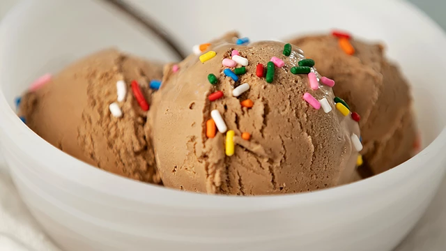

This chocolate ice cream is a rich, custard-style ice cream with no raw eggs!
Prep Time: 10 mins
Cook Time: 10 mins
Additional Time: 4 hrs
Total Time: 4 hrs 20 mins
Servings: 8
Yield: 1 quart
Step 1
Combine milk, sugar, cocoa powder, and salt in a saucepan over
medium heat. Bring to a simmer, stirring constantly.
Step 2
Place egg yolks into a small bowl. Gradually whisk in about 1/2 cup of
hot milk mixture, then return to the saucepan. Heat and stir until
thickened, but do not boil.
Step 3
Remove from the heat and stir in chopped chocolate until melted.
Step 4
Pour into a chilled bowl and refrigerate, stirring occasionally, until cold,
about 2 hours.
Step 5
Stir in cream and vanilla. Pour into an ice cream maker and freeze
according to manufacturer's directions.